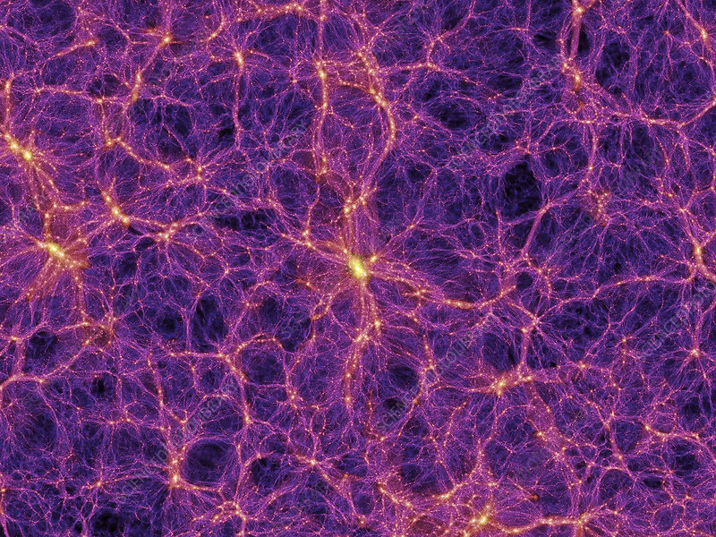

Home Page
Concentrated Dark Matter

Concentrated dark matter is a derivate fuel created by Rick Sanchez used for interdimensional space travel.
Coveted by the Zigerions, this delicious treat is easy to whip up with just a few simple ingredients!
Ingredients
- Cesium
- Plutonium
- Water (Top Tip: Natural Spring Water really makes this recipe pop if you can get your hands on it!)
Method
- Mix Cesium and Plutonium in bucket at ratio of 2 parts Cesium, 1 part Plutonium
- Slowly fold in the water.
- Profit.